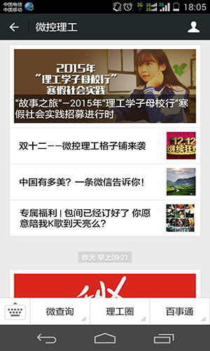
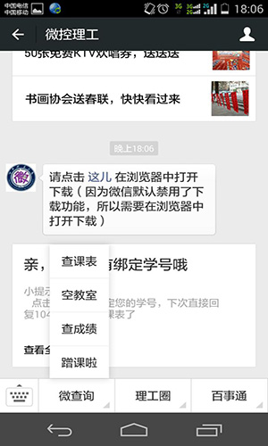
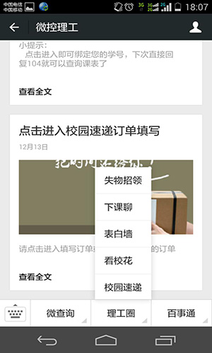

微控理工主要功能截图（一）


针对在校学生进行校园资讯发布的信息平台，属于微信平台的二次开发。主界面为热门新闻的推送，然后根据信息分类，设计有“微查询”、“理工圈”和“百事通”三个入口菜单。“微查询”中包含了学生常用的课表查询、教室查询、成绩查询等功能。“理工圈”包含了“失物招领”、“格子铺”和“校园速递”等生活常用讯息。“百事通”则主要侧重用户的信息反馈和分享，如联系我们、驾校一点通等